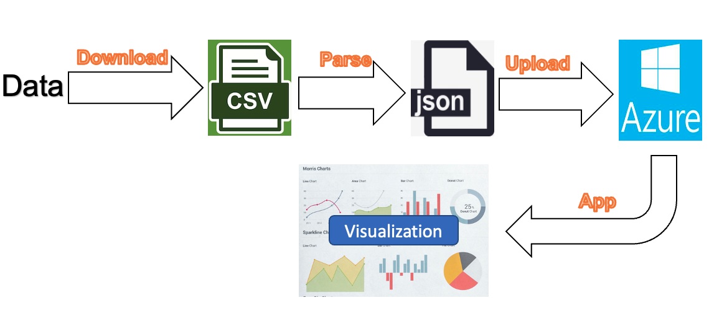
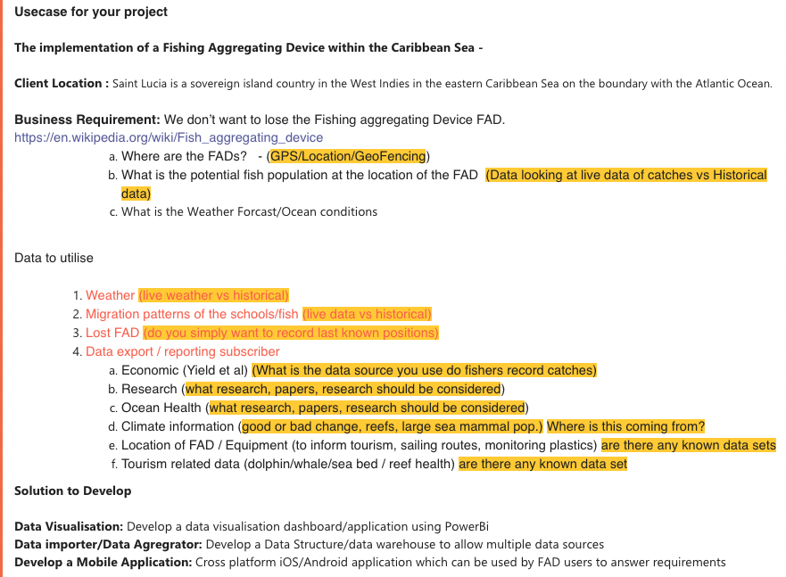
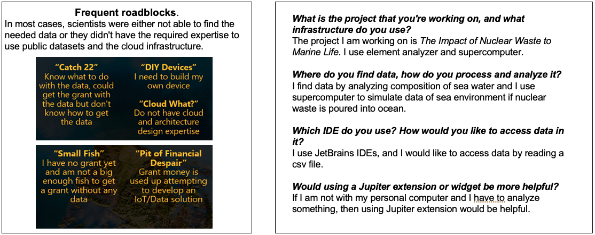
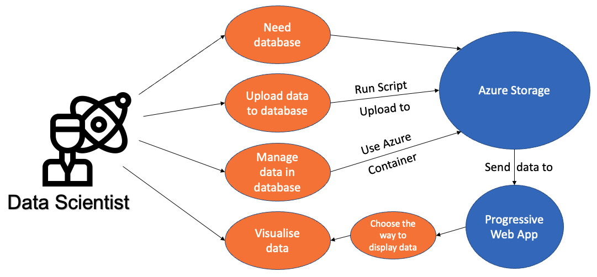
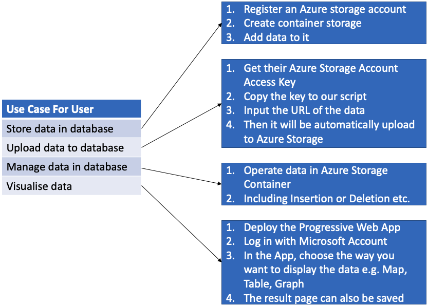
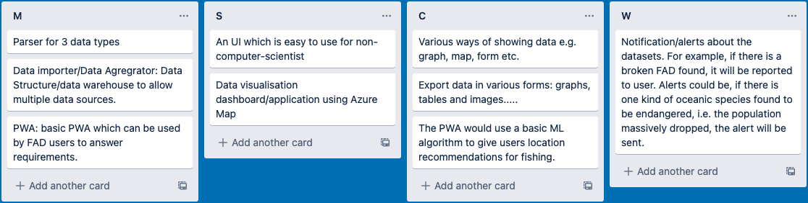
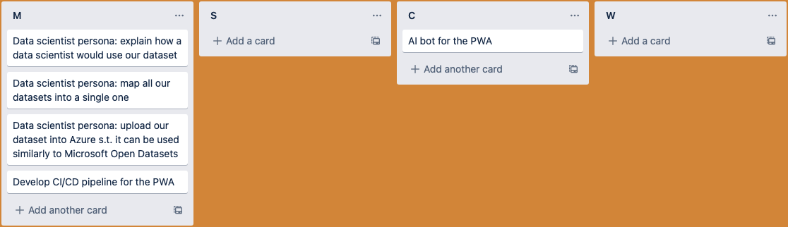

Project Background & Client Introduction
We works on Microsoft project 15 open datasets. The mean purpose of Project 15 is "Accelerating Environmental Conservation & Ecosystem Sustainability with the Internet of Things (IoT)". For our product, we focus on the dataset part of it. More specifically, we provide a service for data scientists in Saint Lucia to track Fish Aggregating Devices (FAD) and provide data operator and visualiser for FAD data. The existing problem is that people who are working on the FADs does not have enough computer science skills to operate a database and visualization tools by themselves.
Our clients are Project 15 team members from Microsoft. They are working on improveing the things related to Project 15. We also have "inner" clients which are the organisation that are working on the FADs.
Core goals of project 15 as a whole:

Project 15 webpage: https://microsoft.github.io/project15/
Project Goals
Our mean goal is to allow data scientists to access and use the data of FADs easier. In details, by our FAD data services, they can easily upload data, do actions on them such as addition or deletion via Azure storage account, and they may also visualise the existing data by maps, tables or graphs.
Requirement Gathering
We gathered the requirements mainly from three aspects: messages and docs from our clients, meeting with our clients and online searching.
Project description from our clients:
We also gathered requirements from the meetings with our clients and internet. During the meeting, our clients discussed with us about the current problems, possible solutions and our expected achievements. We also accessed ocean data website such as National Oceanic and Atmospheric Administration (https://www.noaa.gov/education/resource-collections/ocean-coasts). The details of the requirements we gathered from three aspects will be shown in the MoSCoW requirement list below.
To understand the target users, we used indirect observation: we analyzed the surveys that Microsoft conducted to see why conservational data projects might fail. To further decide how to build the data import feature, we chose to conduct a semi-structured interview because it would help us to both answer our questions and probe where more information is required.
Persona
Use Cases
Our project focus on helping FAD data scientists. The main use case is to let them store, manage and display their data by a few mouse clicks. We provide a platform to operating data, they can access existing data or add new data to the system. The data can then be displayed by maps, tables or graphs. By these features, even without much computer since skills, data scientists can still easily work with the data in the way they want.
Another possible use case is that if data scientists or their organisations allow the public to get the information of the datasets, then they can post the web app's link so people can use it to visualise data.
Use case diagram:
Use case list:
MoSCoW Requirement List
Functional requirements:
Non-functional requirements:
